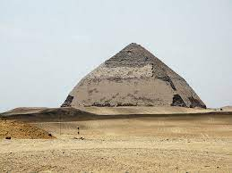

Ancient Roman arhitecture Pos
Posted 01.01.2017 by Someone
A pyramid is a structure, usually of stone, built in the shape of a pyramid. From ancient to modern times people in many different parts of the world have built such structures. The word "pyramid" comes from the Greek word pyramis which meant "wheat cake." The ancient Egyptian word for them was something like "Mer".
view post
Ancient Greak arhitecture Pos
Posted 01.01.2017 by Someone

In Egypt, kings and queens, called Pharaohs, were buried in the tombs of huge square-bottomed pyramids built of stone. They were usually built to be used as tombs for Pharaohs. The ancient Egyptian pyramids are very well built. Some of the pyramids still stand today.[2]
The oldest man-made pyramid found is called the Step pyramid. It is in the Giza Necropolis in Saqqara, near Cairo, Egypt.
view post
Ancient India arhitecture Pos
Posted 01.01.2017 by Someone
Civilizations in many parts of the world have built pyramids. The largest pyramid by volume is the Great Pyramid of Cholula, in the Mexican state of Puebla. For thousands of years, the largest structures on Earth were pyramids—first the Red Pyramid in the Dashur Necropolis and then the Great Pyramid of Khufu, both in Egypt—the latter is the only one of the Seven Wonders of the Ancient World still remaining.
view post